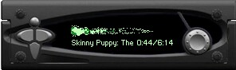

|
|
|
empeg sound |
|
Let's face it. You've spent a lot of
money, and even more time, on your empeg/RioCar. In addition to
the cost of the empeg itself, you've probably dished out money on an
amplifier, speakers and wiring. And who can put a price on the hours
you've spent organizing your music collection or customizing your empeg?
So isn't it a shame that you aren't getting the most out of your empeg
when it comes to sound quality? The good news is that the empeg has all the tools you need to give you great sound: Parametric equalizer on all four channels; two sets of 4 volt RCA outputs, an advanced Phillips DSP and special software tools to adjust the sound. The following tutorial will cover several topics including how to make the best sounding MP3s, properly connecting your speakers to your amp, how to adjust that fancy parametric EQ and how to use some of the other goodies available to empeg users. I recommend doing the sequences in order for best results. The information collected here will be tailored to anyone using the empeg as their only headunit along with a 4-channel amp, but it should be useful for people with different setups as well. 
I'd like to thank all of the people that are
part of the empeg community and those who helped me put this guide
together: Mike Comb, Loren Cox, Mark Cushman, "Drakino"
Tom, Tony Fabris, Bitt Faulk, FireFox31, Hugo Fiennes, Ian "Genixia", John Graley,
Paul
Grzelak,
Christian Hack,
Jim Hogan, Bruno
"hybrid8", Heather "bxgurl",
John "ineedcolor", Roger Lipscombe, Mark Lord, Richard Lovejoy, Matt
Maher, Trevor Man, David
Moss, Rob Riccardelli,
Rob Schofield, Mike Schrag, Ivan Tirado, Rob Voisey,
David Whittaker 'Ladmo'
and all the others that I've forgotten! Let's get
started! |
|
Intro
| Your MP3s |
Speaker Conections | Amp Gain | Phase Test |
|
|